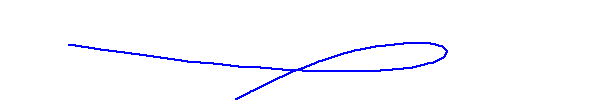

Up:
The Shapiro Conjecture
Next:
Three Points on the Rational Normal Curve
The Rational Normal Curve
Begin with a rational normal curve in 3-space:

There are two animations of sizes
193 KB and
316 KB.
Last Modified Saturday 20 September 2003
by Frank Sottile